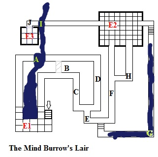
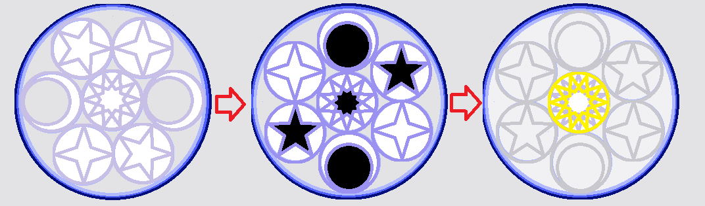

Overview
A young Mind Burrow has made a home in one of the local market stalls of Sigil. Its parent, tearing a portal into the planes, has opened a small pocket dimension behind a merchant's basket of anchovies. Feeding voraciously on the merchant's thoughts, the merchant remains in a fevered nightmare, his stall shrouded in a strong DC illusion that nags at the minds of passing wizards, but that doesn't seem important enough to warrant their attention. Adventurers savvy enough to investigate, or accompanied by world-weary anchovy woman, Terra will find themselves more or less thrust into adventure, Terra suggesting that capable adventurers are hard to come by--there might be a profit in this.
Upon searching the merchant, the key to the plane is found, a jagged dark 5-pointed star embedded in the merchant's back. Upon retrieving it, the plane opens, the hole behind the basket leading downwards. A gradual ramp descends into the darkness. The lair of the mind burrow takes on an unnatural gloom. The air is chill, but the walls are soft like the night sky. Moving without light is somewhat disorienting.
Challenges
A: Sleep Sand - This 10 foot stretch of hallway is blocked by a stream of sleep sand, a fast-moving wet compound that seems to have an indeterminate source. Traversing the sleep sand requires a DC 15 balance check for each square, failure causing players to fall. Falling into the sleep sand will cause a DC 12 will save against sleep. The stream drains in room E1 into an indeterminate reservoir. Particularly dense items or characters may sink in the sleep sand.
B: Secret Doorway - A secret doorway can be found with a DC 10 search check.
C: Negative Energy Trap - The body temperature of passing creatures triggers a trap in the form of negative energy stars. 5-pointed stars fly from the walls, requiring a DC 15 reflex save. As the stars strike, they cause 1d6 negative energy damage. They vanish shortly after striking.
D: Fear Trap - Echoing down this hall is an eerie voice that speaks sounds like whips, each lash inciting panic. This is a DC 12 will save against fear.
E: Atmospheric Frost - The temperature drops sharply into severe cold, deterring Terra thoroughly, if the traps already did not.
F: Illithid Statue - An illithid-like statue (hardness 4) stands guard against a wall, its eyes seething with negative energy. The statue fires bolts of 1d6 negative energy with a DC 15 reflex save requirement within a 20 foot radius. After adventurers progress beyond it 20 feet, the statue rolls up and transforms into a boulder that rolls at a speed of 60 feet in a straight line down the hallway, exploding into a darkness spell upon impact.
At this point, those with knowledge dungeoneering can roll to see if they recognize this as a lair of something in the illithid family. Other key points might include their developing appreciation of symmetry and the recognition that the cold might be more of an enchantment rather than a reality.
G: Submerged Hallway - At the end of a few steps is a submerged 5-foot high hallway filled with the water wetting the sleep sand. This water has the same properties of the sand. Should adventurers be brave enough to swim through, the bottom of the hallway is lined with a pattern, a running sequence of moons, oriented crescents, illuminated side on top.
H: Wall of Spikes - Around the corner is a wall of negative energy spikes that shatter upon impact, dealing 1d6 negative energy damage.
I: Sleep Sand (2) - This if a 5 foot stretch of sleep sand flowing more swiftly than the 10 foot stretch at point A.
J: Mandala of Stars - A luminous wall glows against the darkness. A mandala of a sun, moons and stars creates a barrier towards the chamber beyond. The mandala has a hardness (and opacity) dependent on how many glyphs were activated in the E2 room, 5, 10, 15, 20, etc. The key to deactivating the mandala is a 3-step process. The sun causes 2 points of no save divine damage when touched. The 5-point star causes 2 points of resistable negative energy damage. The 4-point star glows. The inner circle of the moon indents when touched. Step 1 is for adventurers to place a hand on the inner circle each moon and turn the mandala. The sun, the 5-point stars and the inner circles of the moon will darken. Step 2 is to touch each glowing 4-point star then each 5-point damaging star, then to finally touch the sun. Doing so will create the golden pattern over the sun. Step 3 is to forcefully strike the sun, breaking the barrier.
Encounters
Encounter 1: Darkmantle Ambush
Upon entering the dungeon, 2 darkmantles will cast darkness and attempt to descend from the ceiling towards adventurers. The center of the room is filled with sleep sand and adventurers may fall into it in the darkness. If Terra is present, she will recognize the magical darkness and attempt to step forward to escape the darkness and be ready to flank with her dagger. She may wander into the sleep sand, but, being an elf, she is immune to its effects. She is not immune, however, to slipping and falling prone. The darkmantles will follow their default behavior, attempting to fall onto their prey in the small, magically dark room in order to constrict.
Encounter 2: Glyph Room
Lurking in room E2 is a shadow that darts towards players and causes strength damage to them. In the darkness they are almost impossible to see. However, on the floor of the glyph room are 4 4-star glyphs. Activating each one causes the shadow to become visible in a 5 foot radius around each glyph. They also strengthen the mandala of stars.Encounter 3: The Mind Burrow
The mind burrow, still in its infancy, is unable to communicate through minds, yet. It does, however, make gurgling noises, which characters with advanced knowledge in languages, or an understand languages spell may recognize. Talking to the mind burrow, however, may not be a fruitful endeavor. The mind burrow recognizes these adventurers as a threat and will attempt bluffs if the mandala guarding the chamber is disarmed. Slow moving, the creature will attempt imprecise fear spells as a supernatural ability. Once a target is panicked, the mind burrow will burrow into its mind and cause 1d6 negative energy damage with no save. Panicked adventurers may find themselves tripping over the stream of sleep sand outside the room, the current of which may bring them to unwanted destinations.